작업 흐름
- 입력
- 짧은 개그 · 일상 이야기와 등장인물 설명
- 캐스트
- 사람마다
Cast.define데이터 한 덩어리(머리 모양, 옷, 명도)와 캐스트 시트 - 장면
- 장면마다 세로 스트립 한 개. 패널 사이 여백이 시간이고, 카메라가 아래로 읽음. 말풍선 · 효과음 글자 · 집중선 · SD 전환
- 몸 검사
- 뼈 길이 · 팔꿈치 · 손목 수치 검사, 0.2초 간격 스틸 묶음, 처음 보는 리뷰 에이전트
- 출력
- 1080×1920 MP4, 내레이션 · 음악 · 효과음 믹스, 브라우저에서 그리는 장면 페이지
cd motion-webtoon/examples/starter
node ../../scripts/render.mjs v --scene highfive --stills 1,4.6,8.5
node ../../scripts/bone-check.mjs --scene highfive
python3 ../../scripts/mix.py && node ../../scripts/render.mjs v --scene highfive요구 사항: Node + Playwright Chromium, ffmpeg, Python 3 (numpy, Pillow). 스타터는 폰트를 함께 담고 있어 네트워크 없이 돕니다. 단계별 순서는 SKILL.md에 있습니다.
샘플
「마지막 도넛」 세 장면의 패널과 캐스트 시트, 스타터입니다. 모두 같은 캐릭터 리그와 흑백 망가 마감으로 그렸고, 분홍 한 가지만 색으로 남깁니다. 카드를 누르면 새 탭에서 그 장면 페이지가 열리고, 브라우저가 장면을 직접 그립니다.
「마지막 도넛」 3장면 · 74초 · 세로
오후 3시 사무실, 마지막 도넛 한 개를 두고 벌어지는 눈치 싸움. 진지한 다큐멘터리 내레이션이 사소한 싸움을 중계합니다.
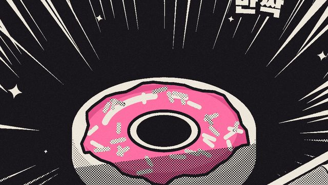
장면 1 · 발견 · 24초마지막, 하나
검은 패널과 흰 집중선 쐐기, 화면에서 유일한 색인 분홍 도넛, 줌 펀치와 플래시
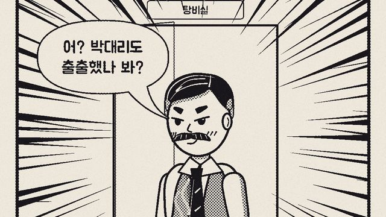
장면 1 · 발견 · 24초김과장의 눈빛
눈 감은 미소에서 번뜩이는 눈으로, 그 순간 검은 집중선과 펀치 줌
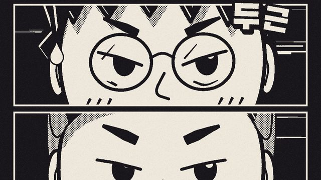
장면 1 · 발견 · 24초세 사람의 눈
세 사람의 눈만 가로로 쌓은 스트립, 흰 속도선, 눈동자 굴리기와 땀방울
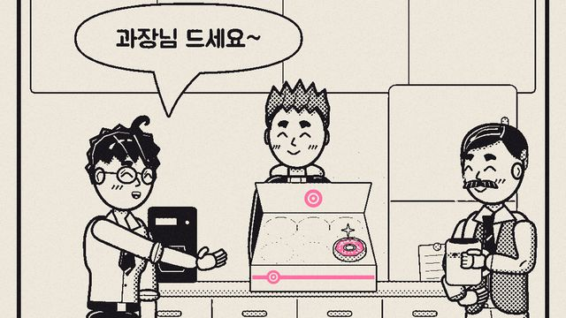
장면 2 · 눈치 싸움 · 26초과장님 드세요~
겉으로는 양보하는 말풍선 핑퐁, 손은 IK로 상자를 가리킴
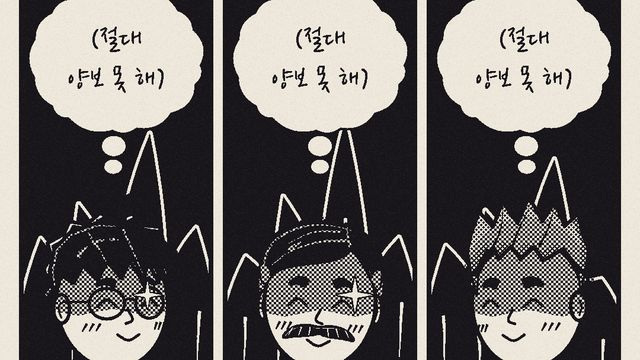
장면 2 · 눈치 싸움 · 26초(절대 양보 못 해)
한 패널을 셋으로 나눈 속마음, 생각 구름, 어두운 오라
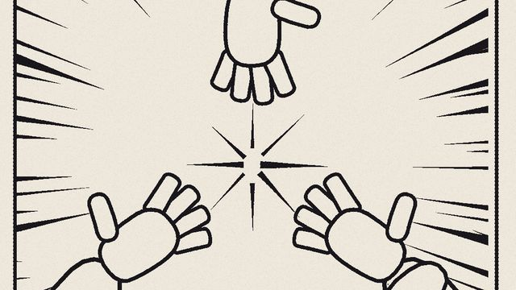
장면 2 · 눈치 싸움 · 26초가위! 바위! 보!
소년만화 문법으로 전환, 프레임 가장자리에서 들어오는 큰 손 세 개, 소매가 뼈를 따라감
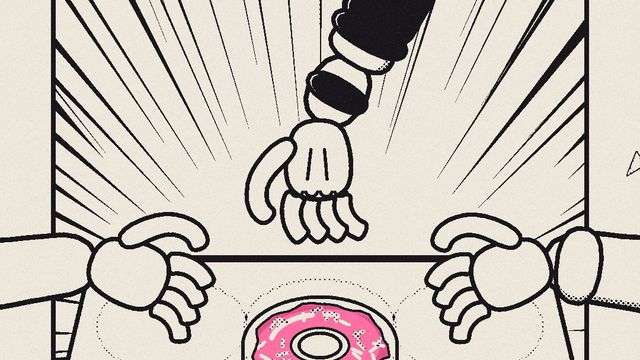
장면 2 · 눈치 싸움 · 26초하나, 둘, 셋!
슬로 모션으로 뻗는 세 팔, 닿기 직전에 멈춤. 팔마다 고정 뼈 길이의 3D IK
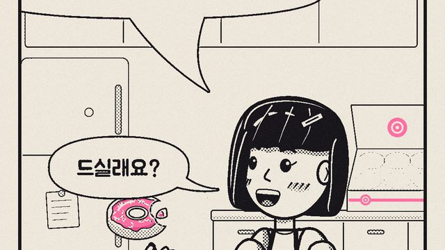
장면 3 · 반전 · 24초드실래요?
네 번째 손이 도넛을 가져감. 조용한 와이드 패널, 한 입 베어 문 자리까지 그림
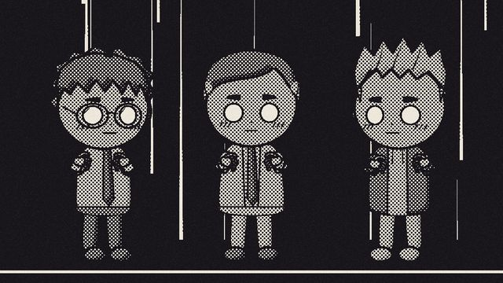
장면 3 · 반전 · 24초석화
SD로 바뀐 세 사람이 망점 돌이 되고, 금이 간 뒤 무너짐
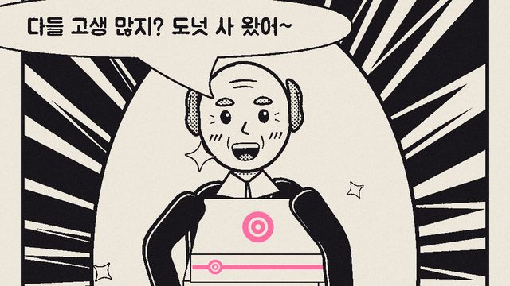
장면 3 · 반전 · 24초도넛 사 왔어~
사장님 등장, 반짝이 배경과 분홍 상자 세 개, 다음 패널에서 회의 시작
캐스트 · 스타터 캐릭터 리그 · 몸 검사
캐스트 시트는 다섯 사람의 정면 · 3/4 · SD, 표정, 손 모양, 관절 검사를 한 페이지씩 보여 줍니다. 스타터는 새 작품이 시작하는 10초짜리 장면입니다.
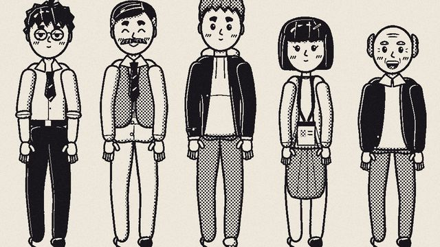
캐스트 시트 · 흑백 망가다섯 사람
머리 모양과 옷의 명도(먹 · 진한 망점 · 옅은 망점 · 종이)로 구별
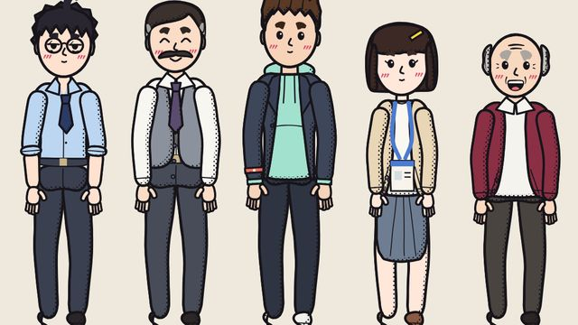
캐스트 시트 · 리소 컬러같은 그림, 다른 인쇄
Cast.style = 'riso' 한 줄로 같은 선을 리소 색 면으로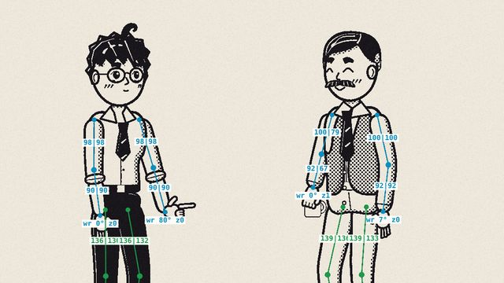
캐스트 시트 · 관절 검사뼈 오버레이
?bones=1: 관절, 고정된 뼈 길이, 팔꿈치 · 무릎 방향, 위반은 빨강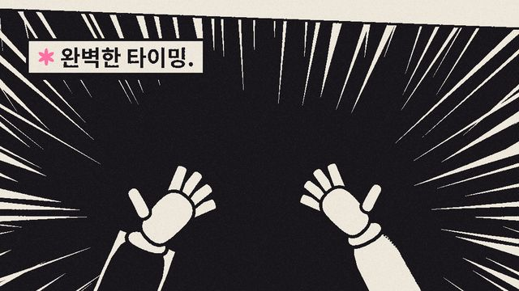
스타터 · 10초하이파이브
두 사람, 개그 하나, 패널 셋: 준비 → 가짜 비장미 슬로 모션 → 빗나감
실제 작품
이 스킬은 이 레포에서 「마지막 도넛」을 만들며 다듬어졌습니다. 캐릭터 리그, 망가 마감, 몸 검사, 사운드 순서가 모두 이 작품에서 나왔습니다.
링크
- SKILL.md 워크플로 · 장면 계약
- 폴더 lib · scripts · references · examples
- README.md 빠른 시작
- references/STYLE.md 컬러 웹툰과 흑백 망가, 두 가지 그림체
- references/CAST.md 캐릭터를 데이터로 정의하기
- references/STORYBOARD.md 스트립 · 개그 타이밍
- references/BODY-CHECK.md 관절 · 손 검사
- references/SOUND.md 내레이션 · 음악 · 효과음
- references/RESEARCH.md 웹툰 · 만화 기법 조사 (GitHub 21곳)
- references/LESSONS.md 겪은 문제와 해결